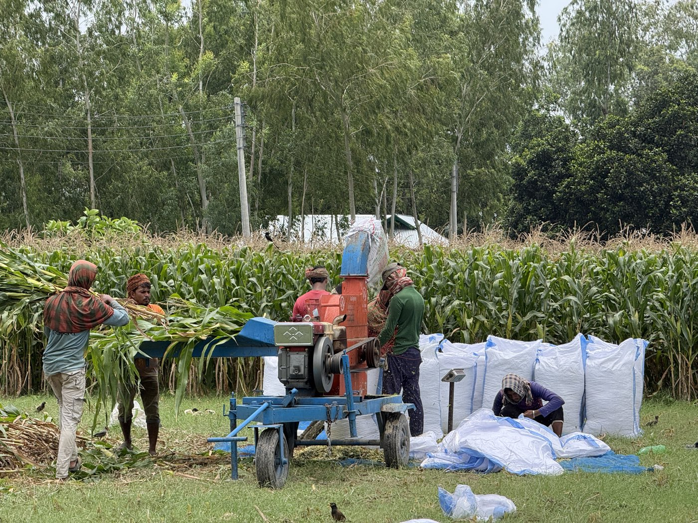

প্রতি বছর শীতে বাংলাদেশের খামারিরা একই সমস্যার মুখোমুখি হন, গ্রীষ্ম ও বর্ষায় সবুজ তাজা ঘাস থাকলেও শীত এলেই সেই খাবার শেষ হয়ে যায়। তখন ঘড়ি গেলে শুকনো খড় আর কন্সেনট্রেট ফিডের উপর নির্ভর করতে হয়, যার দাম অনেক বেশি। খামারভেস্ট সাইলেজের মতো সংরক্ষিত খাবার ব্যবহার করলে এই সমস্যার স্থায়ী সমাধান পাওয়া যায়।
জরুরি বিষয়
সাইলেজ তৈরি করতে হয় আগাম, জুন-জুলাইয়েই। নভেম্বরের মধ্যে সংরক্ষণ শেষ না করলে শীতকালে খাবারের অভাব দেখা দেবে। এই লেখা পড়ে আজই পরিকল্পনা শুরু করুন।
শীতকালে খাদ্য খরচ কেন বাড়ে এবং কী হয়
শীতে তাজা সবুজ খাবার সংগ্রহ করতে পারবেন না, এই সত্যটিই সব সমস্যার মূল। সেচ ছাড়া ঘাস হয় না, তাই মাত্র ছয় মাসের জন্য সবুজ ঘাস থাকে। বাকি ছয় মাস খড় দিতে হয়। শীত মৌসুমে দেশব্যাপী সব খামারিই খড় কেনেন, ফলে চাহিদা বেড়ে যায় এবং দাম তিনগুণ পর্যন্ত বেড়ে যায়। দুধের গাভীর জন্য শুধু খড় দিয়ে চলে না, ধানের কুঁড়া, সোয়ার, ভুসি এবং কন্সেনট্রেট ফিড (যব, ভাঙা ভুট্টা) কিনতে হয়। এগুলোর দাম শীতে পঞ্চাশ প্রতিশত পর্যন্ত বাড়ে।
খাদ্য খরচ বাড়লে, খামারিরা পুষ্টি কমিয়ে দেন বা গরুর সংখ্যা কমান। ফলে দুধের উৎপাদন ৩০ শতাংশ কমে যায় এবং মোটাতাজাকরণ গরু দ্রুত বাড়ে না। রোগও বেশি হয় কারণ শীতে পুষ্টির অভাব গরুর রোগ প্রতিরোধ ক্ষমতা দুর্বল করে দেয়।
সাইলেজ দিয়ে শীতের সমস্যা কীভাবে সমাধান হয়
সাইলেজ হলো গ্রীষ্মে তৈরি করা তাজা সবুজ খাবার যা সংরক্ষিত অবস্থায় ছয় মাস থেকে এক বছর ভালো থাকে। জুন-জুলাইয়ে যখন ভুট্টা বা অন্য তাজা চারা কেটে এয়ারটাইট বস্তায় রেখে দেন, তখন প্রাকৃতিক ফার্মেন্টেশনের কারণে এটি সংরক্ষিত হয়ে যায়। নভেম্বর-ডিসেম্বরে যখন তাজা খাবার পাওয়া যায় না, তখন এই সাইলেজ খুলে দিয়ে খাওয়ান, এটি একদম তাজা খাবারের মতো পুষ্টি দেয়।
খামারভেস্ট সাইলেজ শীতের জন্য সবচেয়ে নির্ভরযোগ্য সমাধান। বস্তায় বন্ধ থাকে তাই কোনো পচার কোনো সমস্যা নেই। দাম শীতে খড়ের মতো বাড়ে না কারণ আগে থেকেই সংরক্ষিত আছে। খুব কম সংযোজন খাদ্য (শুধু ঘড়ি বা অল্প কন্সেনট্রেট) দিয়েই গাভী সুস্থ থাকে এবং উৎপাদন ভালো থাকে।
শীতকালে প্রতিটি পশুর জন্য পুষ্টি পরিকল্পনা
প্রতিটি পশুর খাদ্য চাহিদা আলাদা, শীতে তা পূরণের কৌশল জানা গুরুত্বপূর্ণ।
দুধের গাভীর জন্য (২০-২৫ লিটার দুধ দেওয়া)
- সাইলেজ: ২০ কেজি প্রতিদিন
- খড়: ২-৩ কেজি
- কন্সেনট্রেট মিশ্রণ: দুধের প্রতি লিটারে ৪০০ গ্রাম (২০ লিটর দুধে ৮ কেজি)
- লবণ-ভিটামিন চূর্ণ: ৫০ গ্রাম
- পানি: প্রচুর পরিমাণে সবসময়
মোটাতাজাকরণ গরু (৩-৪ মাসের চক্র)
- সাইলেজ: ১৫ কেজি প্রতিদিন
- খড়: ২ কেজি
- কন্সেনট্রেট মিশ্রণ: ৫ কেজি (যব, ভাঙা ভুট্টা, চাউলের কুঁড়া মিশিয়ে)
- লবণ-ভিটামিন: ৫০ গ্রাম
ছাগল ও ভেড়া
- সাইলেজ: ১.৫ কেজি প্রতিদিন
- খড়: ০.৫ কেজি
- কন্সেনট্রেট: ২০০ গ্রাম
শীতকালে সাইলেজ খাওয়ানোর প্রয়োজনীয় সতর্কতা
সাইলেজ এত পুষ্টিকর এবং সুস্বাদু যে গরুরা বেশি খেতে চায়। তবে তাজা আবহাওয়ার পরে বস্তা খুলে দিলে দুই তিন দিনের মধ্যে সাইলেজ খারাপ হয়ে যায়। তাই প্রতিদিন প্রয়োজন অনুযায়ী বের করে দিন। বস্তা খোলার পরে সাইলেজ ঠান্ডা থাকলে গরুরা দ্রুত খেতে পারে না, তাই সকালে খুলে রাত খাওয়ান অথবা কিছু সময় বাইরে রাখুন।
শীতে গরুর পানির চাহিদা গ্রীষ্মের চেয়ে কম হয় ঠিকই, কিন্তু তবুও সবসময় বিশুদ্ধ পানি সরবরাহ করুন। সাইলেজ খাওয়ানোর সময় পানি দিলে হজমে সহায়তা হয়।
শীতকালীন পরিকল্পনা শুরু করুন আজই
আজই সাইলেজ ক্রয়ের পরিকল্পনা করলে নভেম্বর থেকেই শুরু করতে পারবেন। খামারভেস্ট সাইলেজ প্রতি কেজি মাত্র ১০ টাকায় পাওয়া যায়। একটি দুধের গাভীর জন্য মাসিক খরচ মাত্র ছয় হাজার টাকা (২০ কেজি দৈনিক), যা শীতে খড় ও কন্সেনট্রেট দিয়ে কখনো সম্ভব নয়। উপরন্তু সাইলেজ দেওয়ানো গরু থেকে দুধ উৎপাদন বেশি হয় এবং গরু সুস্থ থাকে।
খামারভেস্ট Facebook পেজ
নিয়মিত শীত মৌসুমের খামার পরিচালনা, সাইলেজ স্টক আপডেট এবং খামারি পরামর্শ পেতে ফেসবুকে যুক্ত থাকুন।